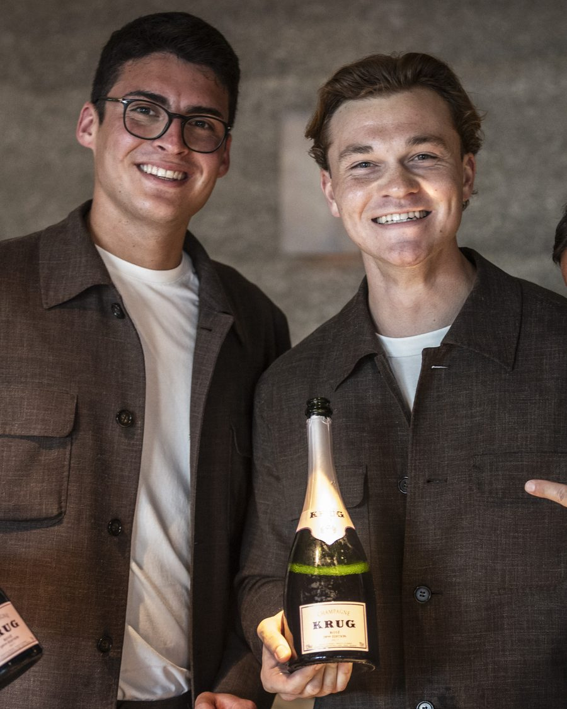

Kavel 1
KRUG Experience bij restaurant Flore**
Een compleet verzorgd Krug Champagne Diner bij Restaurant Flore** in Hotel De L'Europe in Amsterdam.
Inclusief
- Diner bij Flore**, Hotel De L'Europe Amsterdam
- Begeleidend champagnearrangement van Krug
- Voor twee personen
Minimale opbrengst€ 1.000
Aangeboden doorLVMH en Restaurant Flore**